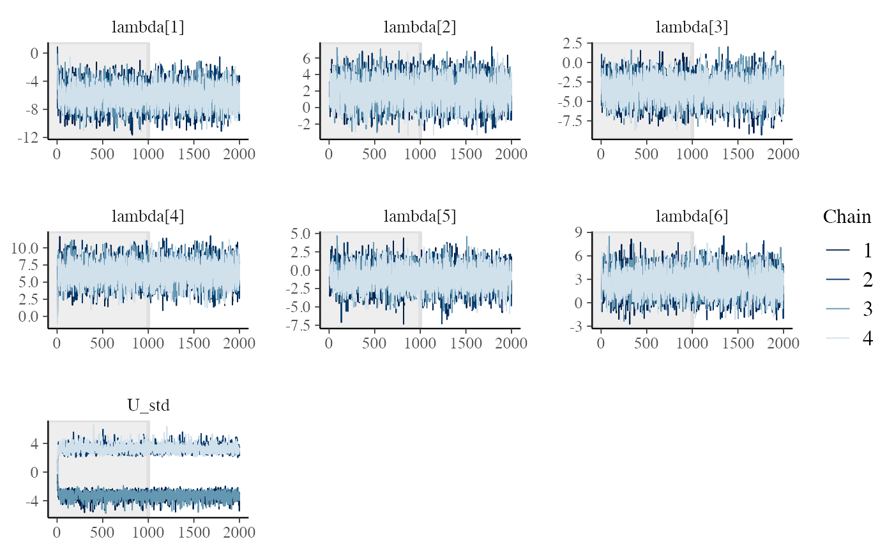
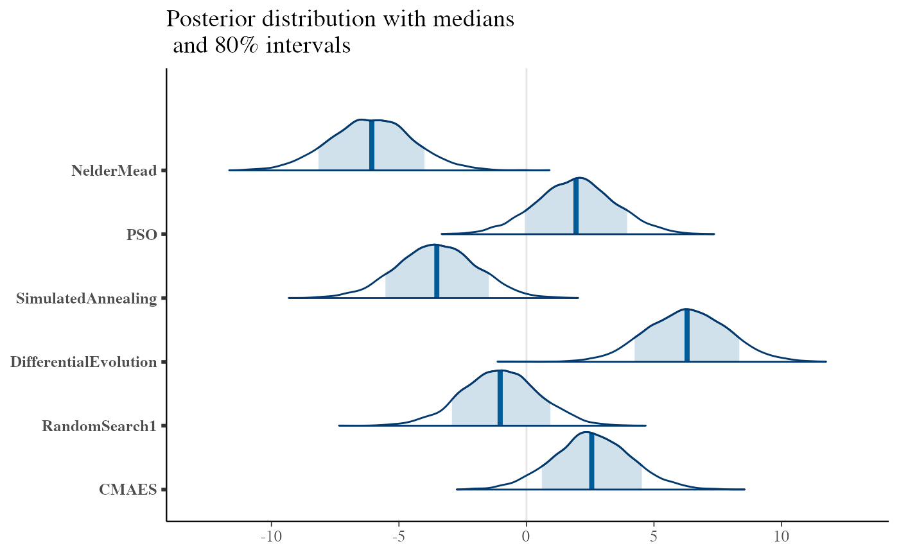
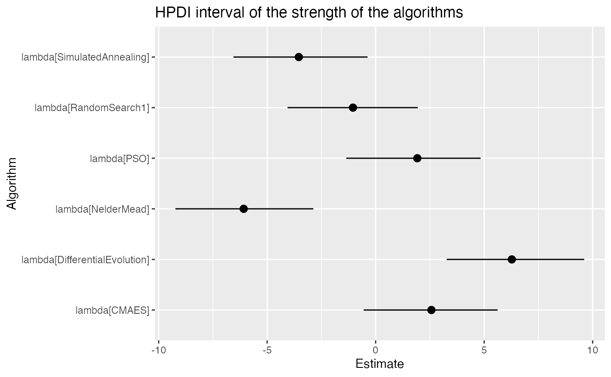

Random effects in the Bradley-Terry model
Source:vignettes/bt_random_effects.Rmd
bt_random_effects.RmdIntroduction
In this vignette, we will go over an example of analyzing optimization algorithms based on benchmark functions. A extended analysis of this example including the experimental conditions for the data collection is discussed in (TODO: ADD REF).
In the development of optimization algorithms it is common to use benchmark functions/problems to show:
- The algorithm works on a number of the artificial problems
- Compare how different algorithms perform in the same set of benchmark problems that have a known solution.
In the comparison part, researchers usually select a small number of benchmark problems (something like 20-30) and run their algorithms and the algorithms they are comparing several times for the same benchmark (something like 10 times each algorithm in each benchmark). At the end, they compare how close the algorithms approached the solution and rank them.
Almost always, this comparison is done with non-parametric tests statistics and often fail to compute the intra-class correlation of the repeated-measures, or average the repeated measures (throwing out the uncertainty of the results) before running the tests.
Why use ranks and not the output directly?
Each benchmark function has a different search space and the algorithms converge quite differently from one function to the other. While the difference between the minimum and the algorithm output is limited to zero (when they solve the problem), the difference can range from 0.1 to 100 depending on the benchmark problem. To use this value would require either transformations such as normalizing for each benchmark. However, if we want only to rank the algorithms and provide a classification between them, the Bradley-Terry model is ideal. The differences in range of each benchmark function is already taken care of when computing who wins and who looses.
In this example, we will show how to use the Bradley-Terry model to compensate the dependent data of the repeated measures and rank the algorithms. Our Bradley-Terry ranking of the abilities also shows the uncertainty of the ranks and the probabilities of one algorithm beating the other in any of the benchmarks.
The data
First let’s load some packages
library(bpcs) library(tidyverse) library(kableExtra) library(knitr) library(gtools) library(rstan) #Stan should use parallel cores # options(mc.cores = parallel::detectCores()) #use multiple cores options(mc.cores = 2) #CRAN works only with max 2 cores rstan::rstan_options(auto_write = TRUE)
The collected data is available as:
data("optimization_algorithms") kable(dplyr::sample_n(optimization_algorithms, size=20), caption= "Sample of the data set")
| Algorithm | Benchmark | TrueRewardDifference | Ndimensions | MaxFevalPerDimensions | simNumber |
|---|---|---|---|---|---|
| DifferentialEvolution | Schwefel2d26N6 | 5.209200e-03 | 6 | 1e+05 | 7 |
| CMAES | Schwefel2d21N6 | 0.000000e+00 | 6 | 1e+05 | 9 |
| PSO | Schwefel2d23N6 | 0.000000e+00 | 6 | 1e+05 | 8 |
| CMAES | BentCigarN6 | 0.000000e+00 | 6 | 1e+05 | 2 |
| DifferentialEvolution | Trigonometric1N6 | 0.000000e+00 | 6 | 1e+05 | 9 |
| CMAES | ChungReynoldsN2 | 0.000000e+00 | 2 | 1e+05 | 6 |
| CMAES | RosenbrockRotatedN6 | 0.000000e+00 | 6 | 1e+05 | 8 |
| CMAES | LunacekBiRastriginN6 | 1.683449e+01 | 6 | 1e+05 | 6 |
| SimulatedAnnealing | BentCigarN6 | 2.182702e+06 | 6 | 1e+05 | 8 |
| DifferentialEvolution | Schwefel2d26N6 | 9.853440e-02 | 6 | 1e+05 | 8 |
| CMAES | WhitleyN6 | 7.613292e+00 | 6 | 1e+05 | 3 |
| DifferentialEvolution | Shubert | 8.800000e-06 | 2 | 1e+05 | 7 |
| NelderMead | ChenBird | 2.000004e+03 | 2 | 1e+05 | 4 |
| NelderMead | Schwefel2d20N2 | 2.907718e+01 | 2 | 1e+05 | 3 |
| RandomSearch1 | Damavandi | 6.965498e-01 | 2 | 1e+05 | 1 |
| RandomSearch1 | BentCigarN6 | 4.945661e+05 | 6 | 1e+05 | 7 |
| CMAES | Shubert | 1.490748e+02 | 2 | 1e+05 | 8 |
| SimulatedAnnealing | Damavandi | 5.108896e-01 | 2 | 1e+05 | 2 |
| DifferentialEvolution | StrechedVSineWave2N | 1.489200e-03 | 2 | 1e+05 | 1 |
| RandomSearch1 | StrechedVSineWave2N | 9.292530e-02 | 2 | 1e+05 | 2 |
In this dataset, we have one main metrics that we can use to compare the algorithms. The TrueRewardDifference is the difference between the minimum found by the algorithm and the global minimum of the benchmark function. simNumber indicates the number of the replication of the same algorithm in the same benchmark function (but with different seeds). All algorithms had a budget of 10,000 function evaluations per number of dimensions for each benchmark function.
Here we have the following benchmark functions:
bm<-unique(optimization_algorithms$Benchmark) nbm<-length(bm) kable(matrix(bm,ncol = 4)) #> Warning in matrix(bm, ncol = 4): data length [30] is not a sub-multiple or #> multiple of the number of rows [8]
| BentCigarN6 | LunacekBiRastriginN6 | Schwefel2d21N6 | Trefethen |
| ChenBird | Mishra7N6 | Schwefel2d23N6 | Trigonometric1N6 |
| ChenV | PinterN6 | Schwefel2d26N6 | Tripod |
| ChungReynoldsN2 | Price1 | Schwefel2d4N6 | WhitleyN6 |
| Damavandi | QingN2 | Shubert | XinSheYang2N2 |
| DiscusN2 | RosenbrockRotatedN6 | SphereN6 | ZakharovN2 |
| ExponentialN2 | SalomonN2 | StrechedVSineWave2N | BentCigarN6 |
| Giunta | Schwefel2d20N2 | ThreeHumpCamelBack | ChenBird |
To reduce a bit the model sampling time here lets reduce the number of benchmark functions and only use 10 of them.
set.seed(1) bm_reduced <- sample(size=10, x=bm,replace = F) optimization_algorithms <- optimization_algorithms %>% dplyr::filter(Benchmark %in% bm_reduced) kable(matrix(bm_reduced,ncol = 2))
| Trefethen | StrechedVSineWave2N |
| ChungReynoldsN2 | PinterN6 |
| ExponentialN2 | RosenbrockRotatedN6 |
| BentCigarN6 | Schwefel2d23N6 |
| ChenBird | Schwefel2d26N6 |
Here we have the optimization algorithms:
| x |
|---|
| NelderMead |
| PSO |
| SimulatedAnnealing |
| DifferentialEvolution |
| RandomSearch1 |
| CMAES |
Preparing the data
To analyze this data we first need to convert it to a paired comparison. We will do it in the following way:
- First we group and rank the algorithms for each benchmark function in each simNumber. If there are ties (not very likely in this case) we will solve them randomly
- We expand this dataset into a wide format in the ranks. Each new column will contain the rank of the algorithms
- We expand this wide format to a long format with each of the paired comparisons.
To compute all the paired combinations between the algorithms we will use the gtools::comb function
comb <- gtools::combinations(n=nalg, r=2, v=seq(1:nalg), repeats.allowed = F)
Creating the dataset
#1 Grouping and ranking df_1<- optimization_algorithms %>% dplyr::group_by(Benchmark, simNumber) %>% dplyr::mutate(rankReward=rank(TrueRewardDifference, ties.method = 'random')) %>% dplyr::ungroup() %>% dplyr::select(-TrueRewardDifference) #2 Expanding in wide format df_2<- df_1 %>% tidyr::pivot_wider(names_from = Algorithm, values_from=rankReward) %>% dplyr::select(-MaxFevalPerDimensions, -Ndimensions) #dropping some variables that we will not use #3 Computing the paired comparisons ## Maybe not the most efficient code, but for this number of variables it is fast enough, only a few seconds... #We first go row by row of the wide data frame df_2 and expand each row into the number of combinations #available of the different ranks df_3<- dplyr::tribble(~algo0_name, ~algo1_name, ~y, ~simNumber, ~Benchmark) for(i in 1:nrow(df_2)) { current_row <- df_2[i,] for(j in 1:nrow(comb)){ comb_row <- comb[j,] algo0_name <- alg[comb_row[1]] algo0 <- comb_row[1] algo0_rank <- current_row[[1,algo0_name]] algo1_name <- alg[comb_row[2]] algo1 <- comb_row[2] algo1_rank <- current_row[[1,algo1_name]] diff_rank <- algo1_rank - algo0_rank y <- ifelse(diff_rank<0, 1, 0) # if rank0 is higher than rank1, algo1 wins df_3 <- tibble::add_row(df_3, algo0_name=algo0_name, algo1_name=algo1_name, y=y, simNumber=current_row$simNumber, Benchmark=current_row$Benchmark) } } df_3<-as.data.frame(df_3)
The table below shows how the dataset looks like now.
sample_n(df_3,size = 20) #> algo0_name algo1_name y simNumber Benchmark #> 1 DifferentialEvolution CMAES 1 7 BentCigarN6 #> 2 RandomSearch1 CMAES 1 2 ExponentialN2 #> 3 NelderMead RandomSearch1 1 7 BentCigarN6 #> 4 PSO CMAES 1 4 ExponentialN2 #> 5 DifferentialEvolution CMAES 1 5 ExponentialN2 #> 6 NelderMead DifferentialEvolution 1 0 RosenbrockRotatedN6 #> 7 NelderMead PSO 1 4 RosenbrockRotatedN6 #> 8 NelderMead DifferentialEvolution 1 6 ChungReynoldsN2 #> 9 NelderMead DifferentialEvolution 1 3 PinterN6 #> 10 RandomSearch1 CMAES 0 3 Schwefel2d26N6 #> 11 RandomSearch1 CMAES 1 2 BentCigarN6 #> 12 NelderMead SimulatedAnnealing 0 0 Schwefel2d23N6 #> 13 PSO DifferentialEvolution 1 7 BentCigarN6 #> 14 NelderMead PSO 1 0 Schwefel2d26N6 #> 15 SimulatedAnnealing DifferentialEvolution 1 2 Schwefel2d23N6 #> 16 SimulatedAnnealing CMAES 1 4 ChenBird #> 17 SimulatedAnnealing RandomSearch1 1 7 ChenBird #> 18 PSO RandomSearch1 0 0 ChenBird #> 19 PSO CMAES 1 8 BentCigarN6 #> 20 PSO CMAES 1 1 RosenbrockRotatedN6
The model
To compensate for the repeated measures model we will use the random effects model. The model can be written as:
For the benchmark \(k\) we have: \[P[i \text{ beats } j | U_k]= \dfrac{exp(\lambda_i + U_{i,k})}{exp(\lambda_i + U_{i,k}) + exp(\lambda_j + U_{j,k})}\]
\[\lambda \sim \text{Normal}(0,3.0)\] \[U \sim \text{Normal}(0,3.0)\]
Now we can estimate and control the effect of each benchmark in each algorithm when we estimate the ability parameter. This model will estimate the parameters \(\lambda\) and \(U\) of the model. Note that the model with many parameters and data points might take a few minutes to sample.
Lets also specify a wide prior for the standard deviation of the random effects. This will help the convergence
m <- bpc(data=df_3, player0 = 'algo0_name', player1 = 'algo1_name', result_column = 'y', cluster = 'Benchmark', model_type = 'btU', priors=list(prior_U_std=10.0)) #> Warning: The largest R-hat is 1.73, indicating chains have not mixed. #> Running the chains for more iterations may help. See #> http://mc-stan.org/misc/warnings.html#r-hat #> Warning: Bulk Effective Samples Size (ESS) is too low, indicating posterior means and medians may be unreliable. #> Running the chains for more iterations may help. See #> http://mc-stan.org/misc/warnings.html#bulk-ess #> Warning: Tail Effective Samples Size (ESS) is too low, indicating posterior variances and tail quantiles may be unreliable. #> Running the chains for more iterations may help. See #> http://mc-stan.org/misc/warnings.html#tail-ess
Diagnostics
First let’s look at the MCMC convergence with the traceplots and look at the Rhat and neff
stanfit<-get_stanfit(m) t <- as.data.frame(summary(stanfit)$summary) t <- t[1:7,c(1, 9, 10)] # getting only the first seven parameters the mean Rhat and neff kable(t)
| mean | n_eff | Rhat | |
|---|---|---|---|
| lambda[1] | -6.1586725 | 3497.917293 | 0.9999664 |
| lambda[2] | 1.8865093 | 3488.425082 | 0.9998077 |
| lambda[3] | -3.5897167 | 3188.296836 | 1.0004454 |
| lambda[4] | 6.2940424 | 3436.330560 | 0.9999535 |
| lambda[5] | -1.0891945 | 3580.847828 | 0.9994137 |
| lambda[6] | 2.5358600 | 3462.330638 | 0.9999700 |
| U_std | -0.0000516 | 2.047331 | 6.3554223 |
All seems ok! Let’s look now at the traceplots
Traceplots of the chains with the bayesplot library
library(bayesplot) #> This is bayesplot version 1.7.2 #> - Online documentation and vignettes at mc-stan.org/bayesplot #> - bayesplot theme set to bayesplot::theme_default() #> * Does _not_ affect other ggplot2 plots #> * See ?bayesplot_theme_set for details on theme setting posterior<-rstan::extract(stanfit,inc_warmup=T,permuted=F) mcmc_trace(posterior,pars = c("lambda[1]","lambda[2]","lambda[3]","lambda[4]", "lambda[5]", "lambda[6]", "U_std"), n_warmup=1000)

Everything seems in order for us to look at the predictive posterior bar plot.
yrep<-predict(m,df_3,n=100,return_matrix = T)
ppc_bars(y=df_3$y, yrep=yrep) + labs(title = 'Bar plot with medians and uncertainty\n intervals superimposed')

This sounds ok. So let’s investigate the actual parameters and the probabilities of the models
Summary parameters
In the console, we can use the summary function. It gives the parameters estimates with HPDI, the probability table for every condition of players and benchmarks and we also have a rank estimate.
summary(m) #> Estimated baseline parameters with HPD intervals: #> #> #> Parameter Mean HPD_lower HPD_higher n_eff Rhat #> --------------------------------------------- ------ ---------- ----------- -------- ----- #> lambda[NelderMead] -6.16 -9.03 -2.82 3497.92 1.00 #> lambda[PSO] 1.89 -1.12 4.97 3488.43 1.00 #> lambda[SimulatedAnnealing] -3.59 -6.83 -0.66 3188.30 1.00 #> lambda[DifferentialEvolution] 6.29 3.21 9.37 3436.33 1.00 #> lambda[RandomSearch1] -1.09 -4.07 2.09 3580.85 1.00 #> lambda[CMAES] 2.54 -0.57 5.40 3462.33 1.00 #> U_std 0.00 -4.24 4.31 2.05 6.36 #> U[NelderMead,BentCigarN6] 0.02 -2.18 2.30 2.83 1.79 #> U[PSO,BentCigarN6] 0.01 -1.10 1.21 62.33 1.03 #> U[SimulatedAnnealing,BentCigarN6] 0.01 -1.29 1.26 8.37 1.15 #> U[DifferentialEvolution,BentCigarN6] 0.00 -1.29 1.33 4.10 1.37 #> U[RandomSearch1,BentCigarN6] -0.01 -1.32 1.42 95.72 1.03 #> U[CMAES,BentCigarN6] 0.00 -3.11 3.13 6.31 1.20 #> U[NelderMead,ChenBird] 0.01 -1.13 1.24 248.29 1.02 #> U[PSO,ChenBird] 0.00 -1.16 1.33 2.80 1.81 #> U[SimulatedAnnealing,ChenBird] 0.01 -1.91 1.97 45.55 1.04 #> U[DifferentialEvolution,ChenBird] 0.02 -1.55 1.24 4.14 1.37 #> U[RandomSearch1,ChenBird] 0.01 -1.52 1.56 3104.33 1.01 #> U[CMAES,ChenBird] -0.01 -3.04 3.08 23.53 1.06 #> U[NelderMead,ChungReynoldsN2] -0.02 -1.33 1.42 3333.60 1.01 #> U[PSO,ChungReynoldsN2] 0.01 -1.25 1.09 3445.48 1.01 #> U[SimulatedAnnealing,ChungReynoldsN2] 0.00 -2.00 1.98 1233.13 1.01 #> U[DifferentialEvolution,ChungReynoldsN2] 0.00 -2.13 2.18 25.51 1.05 #> U[RandomSearch1,ChungReynoldsN2] -0.01 -1.32 1.26 108.59 1.02 #> U[CMAES,ChungReynoldsN2] -0.01 -1.54 1.48 2.50 2.16 #> U[NelderMead,ExponentialN2] 0.02 -1.99 1.97 3.51 1.48 #> U[PSO,ExponentialN2] 0.00 -1.11 1.07 2.51 2.12 #> U[SimulatedAnnealing,ExponentialN2] 0.00 -1.23 1.35 10.50 1.12 #> U[DifferentialEvolution,ExponentialN2] -0.01 -1.38 1.35 2.60 2.00 #> U[RandomSearch1,ExponentialN2] 0.01 -1.12 1.07 2.62 1.98 #> U[CMAES,ExponentialN2] 0.00 -1.79 1.74 5.68 1.24 #> U[NelderMead,PinterN6] -0.01 -1.18 1.26 3.65 1.46 #> U[PSO,PinterN6] -0.01 -1.12 1.10 6.44 1.20 #> U[SimulatedAnnealing,PinterN6] 0.00 -1.40 1.40 2.35 2.47 #> U[DifferentialEvolution,PinterN6] -0.01 -1.97 2.00 3042.04 1.00 #> U[RandomSearch1,PinterN6] 0.01 -1.02 1.05 2.92 1.73 #> U[CMAES,PinterN6] -0.01 -2.33 2.25 2.68 1.92 #> U[NelderMead,RosenbrockRotatedN6] -0.01 -1.36 1.44 13.13 1.09 #> U[PSO,RosenbrockRotatedN6] -0.02 -1.17 1.16 8.32 1.14 #> U[SimulatedAnnealing,RosenbrockRotatedN6] -0.03 -1.29 1.38 2.99 1.68 #> U[DifferentialEvolution,RosenbrockRotatedN6] 0.00 -1.24 1.17 5.63 1.24 #> U[RandomSearch1,RosenbrockRotatedN6] 0.00 -1.36 1.29 4.91 1.28 #> U[CMAES,RosenbrockRotatedN6] 0.00 -1.73 1.70 52.22 1.03 #> U[NelderMead,Schwefel2d23N6] -0.01 -1.16 1.29 2.74 1.86 #> U[PSO,Schwefel2d23N6] -0.01 -1.16 1.15 10.35 1.12 #> U[SimulatedAnnealing,Schwefel2d23N6] -0.02 -2.30 2.41 3.21 1.58 #> U[DifferentialEvolution,Schwefel2d23N6] -0.01 -2.30 2.29 723.52 1.01 #> U[RandomSearch1,Schwefel2d23N6] 0.01 -1.31 1.28 6.56 1.20 #> U[CMAES,Schwefel2d23N6] 0.00 -1.76 1.90 3.62 1.46 #> U[NelderMead,Schwefel2d26N6] 0.00 -1.72 1.66 11.47 1.11 #> U[PSO,Schwefel2d26N6] 0.01 -1.77 1.88 1992.34 1.01 #> U[SimulatedAnnealing,Schwefel2d26N6] -0.01 -1.05 1.02 2452.96 1.01 #> U[DifferentialEvolution,Schwefel2d26N6] 0.00 -1.28 1.33 6.80 1.19 #> U[RandomSearch1,Schwefel2d26N6] -0.01 -1.96 1.97 7.34 1.17 #> U[CMAES,Schwefel2d26N6] 0.00 -1.55 1.50 2.43 2.29 #> U[NelderMead,StrechedVSineWave2N] 0.02 -1.21 1.20 13.38 1.09 #> U[PSO,StrechedVSineWave2N] 0.00 -1.72 1.66 10.73 1.11 #> U[SimulatedAnnealing,StrechedVSineWave2N] 0.00 -1.66 1.69 2.18 3.30 #> U[DifferentialEvolution,StrechedVSineWave2N] -0.01 -2.12 2.14 2.20 3.19 #> U[RandomSearch1,StrechedVSineWave2N] -0.02 -1.18 1.15 3.97 1.40 #> U[CMAES,StrechedVSineWave2N] 0.01 -3.34 3.33 2.79 1.81 #> U[NelderMead,Trefethen] -0.01 -1.90 1.93 2.25 2.88 #> U[PSO,Trefethen] 0.01 -2.15 2.21 2.87 1.76 #> U[SimulatedAnnealing,Trefethen] 0.00 -1.79 1.82 2.92 1.73 #> U[DifferentialEvolution,Trefethen] -0.01 -1.20 1.27 2.97 1.70 #> U[RandomSearch1,Trefethen] 0.01 -1.16 1.19 2.11 4.24 #> U[CMAES,Trefethen] 0.00 -2.37 2.54 2.24 2.90 #> NOTES: #> * A higher lambda indicates a higher team ability #> * The U_std indicates the standard deviation of the normal distribution where the parameters U[player, cluster] are drawn from. Higher values of U_std indicates a higher effect of the cluster in the team abitilies. #> * The U[player, cluster] represents the effect of a particular cluster in a particular team ability. #> #> #> Posterior probabilities: #> These probabilities are calculated from the predictive posterior distribution #> for all player combinations #> #> #> i j U i_beats_j #> ---------------------- ---------------------- -------------------- ---------- #> CMAES DifferentialEvolution BentCigarN6 0.94 #> CMAES NelderMead BentCigarN6 1.00 #> CMAES PSO BentCigarN6 1.00 #> CMAES RandomSearch1 BentCigarN6 1.00 #> CMAES SimulatedAnnealing BentCigarN6 1.00 #> DifferentialEvolution NelderMead BentCigarN6 1.00 #> DifferentialEvolution PSO BentCigarN6 0.95 #> DifferentialEvolution RandomSearch1 BentCigarN6 1.00 #> DifferentialEvolution SimulatedAnnealing BentCigarN6 1.00 #> NelderMead PSO BentCigarN6 0.00 #> NelderMead RandomSearch1 BentCigarN6 0.00 #> NelderMead SimulatedAnnealing BentCigarN6 0.03 #> PSO RandomSearch1 BentCigarN6 0.96 #> PSO SimulatedAnnealing BentCigarN6 0.99 #> RandomSearch1 SimulatedAnnealing BentCigarN6 0.86 #> CMAES DifferentialEvolution ChenBird 0.94 #> CMAES NelderMead ChenBird 1.00 #> CMAES PSO ChenBird 1.00 #> CMAES RandomSearch1 ChenBird 1.00 #> CMAES SimulatedAnnealing ChenBird 1.00 #> DifferentialEvolution NelderMead ChenBird 1.00 #> DifferentialEvolution PSO ChenBird 0.95 #> DifferentialEvolution RandomSearch1 ChenBird 1.00 #> DifferentialEvolution SimulatedAnnealing ChenBird 1.00 #> NelderMead PSO ChenBird 0.00 #> NelderMead RandomSearch1 ChenBird 0.08 #> NelderMead SimulatedAnnealing ChenBird 0.69 #> PSO RandomSearch1 ChenBird 0.97 #> PSO SimulatedAnnealing ChenBird 1.00 #> RandomSearch1 SimulatedAnnealing ChenBird 0.96 #> CMAES DifferentialEvolution ChungReynoldsN2 0.03 #> CMAES NelderMead ChungReynoldsN2 1.00 #> CMAES PSO ChungReynoldsN2 0.87 #> CMAES RandomSearch1 ChungReynoldsN2 0.99 #> CMAES SimulatedAnnealing ChungReynoldsN2 1.00 #> DifferentialEvolution NelderMead ChungReynoldsN2 1.00 #> DifferentialEvolution PSO ChungReynoldsN2 1.00 #> DifferentialEvolution RandomSearch1 ChungReynoldsN2 1.00 #> DifferentialEvolution SimulatedAnnealing ChungReynoldsN2 1.00 #> NelderMead PSO ChungReynoldsN2 0.00 #> NelderMead RandomSearch1 ChungReynoldsN2 0.02 #> NelderMead SimulatedAnnealing ChungReynoldsN2 0.39 #> PSO RandomSearch1 ChungReynoldsN2 0.95 #> PSO SimulatedAnnealing ChungReynoldsN2 1.00 #> RandomSearch1 SimulatedAnnealing ChungReynoldsN2 0.98 #> CMAES DifferentialEvolution ExponentialN2 0.54 #> CMAES NelderMead ExponentialN2 1.00 #> CMAES PSO ExponentialN2 0.96 #> CMAES RandomSearch1 ExponentialN2 1.00 #> CMAES SimulatedAnnealing ExponentialN2 1.00 #> DifferentialEvolution NelderMead ExponentialN2 1.00 #> DifferentialEvolution PSO ExponentialN2 0.95 #> DifferentialEvolution RandomSearch1 ExponentialN2 1.00 #> DifferentialEvolution SimulatedAnnealing ExponentialN2 1.00 #> NelderMead PSO ExponentialN2 0.00 #> NelderMead RandomSearch1 ExponentialN2 0.01 #> NelderMead SimulatedAnnealing ExponentialN2 0.01 #> PSO RandomSearch1 ExponentialN2 0.93 #> PSO SimulatedAnnealing ExponentialN2 0.97 #> RandomSearch1 SimulatedAnnealing ExponentialN2 0.72 #> CMAES DifferentialEvolution PinterN6 0.00 #> CMAES NelderMead PinterN6 0.96 #> CMAES PSO PinterN6 0.03 #> CMAES RandomSearch1 PinterN6 0.28 #> CMAES SimulatedAnnealing PinterN6 0.49 #> DifferentialEvolution NelderMead PinterN6 1.00 #> DifferentialEvolution PSO PinterN6 0.98 #> DifferentialEvolution RandomSearch1 PinterN6 1.00 #> DifferentialEvolution SimulatedAnnealing PinterN6 1.00 #> NelderMead PSO PinterN6 0.00 #> NelderMead RandomSearch1 PinterN6 0.02 #> NelderMead SimulatedAnnealing PinterN6 0.04 #> PSO RandomSearch1 PinterN6 0.93 #> PSO SimulatedAnnealing PinterN6 0.98 #> RandomSearch1 SimulatedAnnealing PinterN6 0.72 #> CMAES DifferentialEvolution RosenbrockRotatedN6 0.17 #> CMAES NelderMead RosenbrockRotatedN6 1.00 #> CMAES PSO RosenbrockRotatedN6 0.90 #> CMAES RandomSearch1 RosenbrockRotatedN6 1.00 #> CMAES SimulatedAnnealing RosenbrockRotatedN6 1.00 #> DifferentialEvolution NelderMead RosenbrockRotatedN6 1.00 #> DifferentialEvolution PSO RosenbrockRotatedN6 0.98 #> DifferentialEvolution RandomSearch1 RosenbrockRotatedN6 1.00 #> DifferentialEvolution SimulatedAnnealing RosenbrockRotatedN6 1.00 #> NelderMead PSO RosenbrockRotatedN6 0.00 #> NelderMead RandomSearch1 RosenbrockRotatedN6 0.01 #> NelderMead SimulatedAnnealing RosenbrockRotatedN6 0.10 #> PSO RandomSearch1 RosenbrockRotatedN6 0.97 #> PSO SimulatedAnnealing RosenbrockRotatedN6 1.00 #> RandomSearch1 SimulatedAnnealing RosenbrockRotatedN6 0.90 #> CMAES DifferentialEvolution Schwefel2d23N6 0.04 #> CMAES NelderMead Schwefel2d23N6 1.00 #> CMAES PSO Schwefel2d23N6 0.95 #> CMAES RandomSearch1 Schwefel2d23N6 1.00 #> CMAES SimulatedAnnealing Schwefel2d23N6 1.00 #> DifferentialEvolution NelderMead Schwefel2d23N6 1.00 #> DifferentialEvolution PSO Schwefel2d23N6 1.00 #> DifferentialEvolution RandomSearch1 Schwefel2d23N6 1.00 #> DifferentialEvolution SimulatedAnnealing Schwefel2d23N6 1.00 #> NelderMead PSO Schwefel2d23N6 0.00 #> NelderMead RandomSearch1 Schwefel2d23N6 0.03 #> NelderMead SimulatedAnnealing Schwefel2d23N6 0.76 #> PSO RandomSearch1 Schwefel2d23N6 0.95 #> PSO SimulatedAnnealing Schwefel2d23N6 1.00 #> RandomSearch1 SimulatedAnnealing Schwefel2d23N6 0.99 #> CMAES DifferentialEvolution Schwefel2d26N6 0.01 #> CMAES NelderMead Schwefel2d26N6 0.98 #> CMAES PSO Schwefel2d26N6 0.81 #> CMAES RandomSearch1 Schwefel2d26N6 0.15 #> CMAES SimulatedAnnealing Schwefel2d26N6 0.97 #> DifferentialEvolution NelderMead Schwefel2d26N6 1.00 #> DifferentialEvolution PSO Schwefel2d26N6 1.00 #> DifferentialEvolution RandomSearch1 Schwefel2d26N6 0.93 #> DifferentialEvolution SimulatedAnnealing Schwefel2d26N6 1.00 #> NelderMead PSO Schwefel2d26N6 0.09 #> NelderMead RandomSearch1 Schwefel2d26N6 0.00 #> NelderMead SimulatedAnnealing Schwefel2d26N6 0.44 #> PSO RandomSearch1 Schwefel2d26N6 0.04 #> PSO SimulatedAnnealing Schwefel2d26N6 0.88 #> RandomSearch1 SimulatedAnnealing Schwefel2d26N6 0.99 #> CMAES DifferentialEvolution StrechedVSineWave2N 0.00 #> CMAES NelderMead StrechedVSineWave2N 0.81 #> CMAES PSO StrechedVSineWave2N 0.00 #> CMAES RandomSearch1 StrechedVSineWave2N 0.02 #> CMAES SimulatedAnnealing StrechedVSineWave2N 0.04 #> DifferentialEvolution NelderMead StrechedVSineWave2N 1.00 #> DifferentialEvolution PSO StrechedVSineWave2N 0.97 #> DifferentialEvolution RandomSearch1 StrechedVSineWave2N 1.00 #> DifferentialEvolution SimulatedAnnealing StrechedVSineWave2N 1.00 #> NelderMead PSO StrechedVSineWave2N 0.00 #> NelderMead RandomSearch1 StrechedVSineWave2N 0.00 #> NelderMead SimulatedAnnealing StrechedVSineWave2N 0.01 #> PSO RandomSearch1 StrechedVSineWave2N 0.96 #> PSO SimulatedAnnealing StrechedVSineWave2N 0.99 #> RandomSearch1 SimulatedAnnealing StrechedVSineWave2N 0.68 #> CMAES DifferentialEvolution Trefethen 0.00 #> CMAES NelderMead Trefethen 0.99 #> CMAES PSO Trefethen 0.00 #> CMAES RandomSearch1 Trefethen 0.15 #> CMAES SimulatedAnnealing Trefethen 0.22 #> DifferentialEvolution NelderMead Trefethen 1.00 #> DifferentialEvolution PSO Trefethen 0.62 #> DifferentialEvolution RandomSearch1 Trefethen 0.99 #> DifferentialEvolution SimulatedAnnealing Trefethen 1.00 #> NelderMead PSO Trefethen 0.00 #> NelderMead RandomSearch1 Trefethen 0.00 #> NelderMead SimulatedAnnealing Trefethen 0.01 #> PSO RandomSearch1 Trefethen 0.99 #> PSO SimulatedAnnealing Trefethen 0.99 #> RandomSearch1 SimulatedAnnealing Trefethen 0.61 #> #> #> Rank of the players' abilities: #> The rank is based on the posterior rank distribution of the lambda parameter #> #> #> Parameter MedianRank MeanRank StdRank #> ------------------------------ ----------- --------- -------- #> lambda[DifferentialEvolution] 1 1.01 0.08 #> lambda[CMAES] 2 2.32 0.50 #> lambda[PSO] 3 2.71 0.50 #> lambda[RandomSearch1] 4 4.02 0.30 #> lambda[SimulatedAnnealing] 5 4.99 0.29 #> lambda[NelderMead] 6 5.96 0.20
Of course we can get these estimates in nicer tables with kable that allows a greater deal of customization
kable(get_hpdi_parameters(m), caption = "Parameter distribution with the HPD intervals", digits = 3)
| Parameter | Mean | HPD_lower | HPD_higher | n_eff | Rhat |
|---|---|---|---|---|---|
| lambda[NelderMead] | -6.159 | -9.028 | -2.816 | 3497.917 | 1.000 |
| lambda[PSO] | 1.887 | -1.120 | 4.973 | 3488.425 | 1.000 |
| lambda[SimulatedAnnealing] | -3.590 | -6.826 | -0.657 | 3188.297 | 1.000 |
| lambda[DifferentialEvolution] | 6.294 | 3.206 | 9.372 | 3436.331 | 1.000 |
| lambda[RandomSearch1] | -1.089 | -4.070 | 2.095 | 3580.848 | 0.999 |
| lambda[CMAES] | 2.536 | -0.572 | 5.403 | 3462.331 | 1.000 |
| U_std | 0.000 | -4.235 | 4.307 | 2.047 | 6.355 |
| U[NelderMead,BentCigarN6] | 0.016 | -2.182 | 2.298 | 2.827 | 1.792 |
| U[PSO,BentCigarN6] | 0.006 | -1.100 | 1.212 | 62.334 | 1.032 |
| U[SimulatedAnnealing,BentCigarN6] | 0.015 | -1.285 | 1.259 | 8.370 | 1.147 |
| U[DifferentialEvolution,BentCigarN6] | 0.000 | -1.285 | 1.333 | 4.098 | 1.373 |
| U[RandomSearch1,BentCigarN6] | -0.009 | -1.316 | 1.421 | 95.716 | 1.029 |
| U[CMAES,BentCigarN6] | 0.003 | -3.105 | 3.130 | 6.313 | 1.204 |
| U[NelderMead,ChenBird] | 0.007 | -1.125 | 1.241 | 248.290 | 1.017 |
| U[PSO,ChenBird] | -0.003 | -1.162 | 1.332 | 2.797 | 1.815 |
| U[SimulatedAnnealing,ChenBird] | 0.014 | -1.913 | 1.972 | 45.550 | 1.035 |
| U[DifferentialEvolution,ChenBird] | 0.018 | -1.550 | 1.244 | 4.136 | 1.369 |
| U[RandomSearch1,ChenBird] | 0.008 | -1.518 | 1.555 | 3104.326 | 1.008 |
| U[CMAES,ChenBird] | -0.009 | -3.037 | 3.076 | 23.532 | 1.055 |
| U[NelderMead,ChungReynoldsN2] | -0.020 | -1.332 | 1.418 | 3333.595 | 1.007 |
| U[PSO,ChungReynoldsN2] | 0.008 | -1.248 | 1.093 | 3445.480 | 1.007 |
| U[SimulatedAnnealing,ChungReynoldsN2] | -0.004 | -1.997 | 1.981 | 1233.130 | 1.013 |
| U[DifferentialEvolution,ChungReynoldsN2] | 0.000 | -2.134 | 2.180 | 25.515 | 1.052 |
| U[RandomSearch1,ChungReynoldsN2] | -0.006 | -1.318 | 1.255 | 108.590 | 1.022 |
| U[CMAES,ChungReynoldsN2] | -0.008 | -1.541 | 1.480 | 2.500 | 2.156 |
| U[NelderMead,ExponentialN2] | 0.016 | -1.991 | 1.973 | 3.513 | 1.485 |
| U[PSO,ExponentialN2] | 0.003 | -1.111 | 1.068 | 2.515 | 2.124 |
| U[SimulatedAnnealing,ExponentialN2] | 0.000 | -1.234 | 1.349 | 10.504 | 1.118 |
| U[DifferentialEvolution,ExponentialN2] | -0.005 | -1.383 | 1.345 | 2.599 | 2.000 |
| U[RandomSearch1,ExponentialN2] | 0.005 | -1.116 | 1.070 | 2.621 | 1.976 |
| U[CMAES,ExponentialN2] | 0.001 | -1.794 | 1.742 | 5.675 | 1.235 |
| U[NelderMead,PinterN6] | -0.012 | -1.179 | 1.262 | 3.649 | 1.460 |
| U[PSO,PinterN6] | -0.007 | -1.122 | 1.101 | 6.440 | 1.198 |
| U[SimulatedAnnealing,PinterN6] | -0.003 | -1.398 | 1.400 | 2.354 | 2.465 |
| U[DifferentialEvolution,PinterN6] | -0.015 | -1.967 | 2.002 | 3042.040 | 1.004 |
| U[RandomSearch1,PinterN6] | 0.014 | -1.015 | 1.054 | 2.920 | 1.725 |
| U[CMAES,PinterN6] | -0.005 | -2.326 | 2.252 | 2.678 | 1.919 |
| U[NelderMead,RosenbrockRotatedN6] | -0.013 | -1.363 | 1.443 | 13.125 | 1.091 |
| U[PSO,RosenbrockRotatedN6] | -0.016 | -1.173 | 1.164 | 8.319 | 1.145 |
| U[SimulatedAnnealing,RosenbrockRotatedN6] | -0.027 | -1.295 | 1.381 | 2.989 | 1.683 |
| U[DifferentialEvolution,RosenbrockRotatedN6] | -0.005 | -1.238 | 1.167 | 5.634 | 1.237 |
| U[RandomSearch1,RosenbrockRotatedN6] | -0.004 | -1.361 | 1.293 | 4.906 | 1.284 |
| U[CMAES,RosenbrockRotatedN6] | 0.002 | -1.731 | 1.697 | 52.218 | 1.032 |
| U[NelderMead,Schwefel2d23N6] | -0.006 | -1.164 | 1.286 | 2.735 | 1.860 |
| U[PSO,Schwefel2d23N6] | -0.015 | -1.160 | 1.148 | 10.351 | 1.120 |
| U[SimulatedAnnealing,Schwefel2d23N6] | -0.017 | -2.304 | 2.406 | 3.208 | 1.580 |
| U[DifferentialEvolution,Schwefel2d23N6] | -0.006 | -2.301 | 2.288 | 723.524 | 1.013 |
| U[RandomSearch1,Schwefel2d23N6] | 0.011 | -1.310 | 1.280 | 6.558 | 1.196 |
| U[CMAES,Schwefel2d23N6] | 0.003 | -1.758 | 1.898 | 3.620 | 1.462 |
| U[NelderMead,Schwefel2d26N6] | 0.001 | -1.722 | 1.661 | 11.467 | 1.109 |
| U[PSO,Schwefel2d26N6] | 0.008 | -1.774 | 1.882 | 1992.341 | 1.010 |
| U[SimulatedAnnealing,Schwefel2d26N6] | -0.006 | -1.051 | 1.022 | 2452.960 | 1.009 |
| U[DifferentialEvolution,Schwefel2d26N6] | 0.001 | -1.279 | 1.334 | 6.804 | 1.187 |
| U[RandomSearch1,Schwefel2d26N6] | -0.011 | -1.957 | 1.970 | 7.343 | 1.172 |
| U[CMAES,Schwefel2d26N6] | -0.003 | -1.548 | 1.503 | 2.433 | 2.285 |
| U[NelderMead,StrechedVSineWave2N] | 0.020 | -1.207 | 1.195 | 13.383 | 1.093 |
| U[PSO,StrechedVSineWave2N] | 0.003 | -1.719 | 1.661 | 10.734 | 1.114 |
| U[SimulatedAnnealing,StrechedVSineWave2N] | -0.002 | -1.657 | 1.694 | 2.182 | 3.304 |
| U[DifferentialEvolution,StrechedVSineWave2N] | -0.013 | -2.120 | 2.141 | 2.197 | 3.187 |
| U[RandomSearch1,StrechedVSineWave2N] | -0.022 | -1.182 | 1.150 | 3.968 | 1.397 |
| U[CMAES,StrechedVSineWave2N] | 0.006 | -3.339 | 3.331 | 2.794 | 1.814 |
| U[NelderMead,Trefethen] | -0.010 | -1.897 | 1.931 | 2.249 | 2.881 |
| U[PSO,Trefethen] | 0.007 | -2.150 | 2.207 | 2.871 | 1.756 |
| U[SimulatedAnnealing,Trefethen] | -0.004 | -1.794 | 1.825 | 2.919 | 1.725 |
| U[DifferentialEvolution,Trefethen] | -0.009 | -1.197 | 1.273 | 2.973 | 1.705 |
| U[RandomSearch1,Trefethen] | 0.009 | -1.156 | 1.194 | 2.106 | 4.241 |
| U[CMAES,Trefethen] | -0.001 | -2.375 | 2.536 | 2.243 | 2.895 |
kable(get_probabilities(m)$Table, caption = "Probabilities of one an algorithm beating the other in different benchmarks", digits = 3)
| i | j | U | i_beats_j |
|---|---|---|---|
| CMAES | DifferentialEvolution | BentCigarN6 | 0.942 |
| CMAES | NelderMead | BentCigarN6 | 1.000 |
| CMAES | PSO | BentCigarN6 | 0.998 |
| CMAES | RandomSearch1 | BentCigarN6 | 1.000 |
| CMAES | SimulatedAnnealing | BentCigarN6 | 1.000 |
| DifferentialEvolution | NelderMead | BentCigarN6 | 1.000 |
| DifferentialEvolution | PSO | BentCigarN6 | 0.952 |
| DifferentialEvolution | RandomSearch1 | BentCigarN6 | 0.998 |
| DifferentialEvolution | SimulatedAnnealing | BentCigarN6 | 1.000 |
| NelderMead | PSO | BentCigarN6 | 0.000 |
| NelderMead | RandomSearch1 | BentCigarN6 | 0.004 |
| NelderMead | SimulatedAnnealing | BentCigarN6 | 0.025 |
| PSO | RandomSearch1 | BentCigarN6 | 0.962 |
| PSO | SimulatedAnnealing | BentCigarN6 | 0.991 |
| RandomSearch1 | SimulatedAnnealing | BentCigarN6 | 0.870 |
| CMAES | DifferentialEvolution | ChenBird | 0.933 |
| CMAES | NelderMead | ChenBird | 1.000 |
| CMAES | PSO | ChenBird | 0.996 |
| CMAES | RandomSearch1 | ChenBird | 1.000 |
| CMAES | SimulatedAnnealing | ChenBird | 1.000 |
| DifferentialEvolution | NelderMead | ChenBird | 1.000 |
| DifferentialEvolution | PSO | ChenBird | 0.959 |
| DifferentialEvolution | RandomSearch1 | ChenBird | 0.998 |
| DifferentialEvolution | SimulatedAnnealing | ChenBird | 1.000 |
| NelderMead | PSO | ChenBird | 0.005 |
| NelderMead | RandomSearch1 | ChenBird | 0.082 |
| NelderMead | SimulatedAnnealing | ChenBird | 0.718 |
| PSO | RandomSearch1 | ChenBird | 0.967 |
| PSO | SimulatedAnnealing | ChenBird | 0.999 |
| RandomSearch1 | SimulatedAnnealing | ChenBird | 0.965 |
| CMAES | DifferentialEvolution | ChungReynoldsN2 | 0.027 |
| CMAES | NelderMead | ChungReynoldsN2 | 1.000 |
| CMAES | PSO | ChungReynoldsN2 | 0.865 |
| CMAES | RandomSearch1 | ChungReynoldsN2 | 0.995 |
| CMAES | SimulatedAnnealing | ChungReynoldsN2 | 1.000 |
| DifferentialEvolution | NelderMead | ChungReynoldsN2 | 1.000 |
| DifferentialEvolution | PSO | ChungReynoldsN2 | 0.996 |
| DifferentialEvolution | RandomSearch1 | ChungReynoldsN2 | 1.000 |
| DifferentialEvolution | SimulatedAnnealing | ChungReynoldsN2 | 1.000 |
| NelderMead | PSO | ChungReynoldsN2 | 0.000 |
| NelderMead | RandomSearch1 | ChungReynoldsN2 | 0.014 |
| NelderMead | SimulatedAnnealing | ChungReynoldsN2 | 0.401 |
| PSO | RandomSearch1 | ChungReynoldsN2 | 0.962 |
| PSO | SimulatedAnnealing | ChungReynoldsN2 | 0.999 |
| RandomSearch1 | SimulatedAnnealing | ChungReynoldsN2 | 0.979 |
| CMAES | DifferentialEvolution | ExponentialN2 | 0.520 |
| CMAES | NelderMead | ExponentialN2 | 1.000 |
| CMAES | PSO | ExponentialN2 | 0.956 |
| CMAES | RandomSearch1 | ExponentialN2 | 0.997 |
| CMAES | SimulatedAnnealing | ExponentialN2 | 0.999 |
| DifferentialEvolution | NelderMead | ExponentialN2 | 1.000 |
| DifferentialEvolution | PSO | ExponentialN2 | 0.950 |
| DifferentialEvolution | RandomSearch1 | ExponentialN2 | 0.997 |
| DifferentialEvolution | SimulatedAnnealing | ExponentialN2 | 0.998 |
| NelderMead | PSO | ExponentialN2 | 0.000 |
| NelderMead | RandomSearch1 | ExponentialN2 | 0.007 |
| NelderMead | SimulatedAnnealing | ExponentialN2 | 0.016 |
| PSO | RandomSearch1 | ExponentialN2 | 0.919 |
| PSO | SimulatedAnnealing | ExponentialN2 | 0.973 |
| RandomSearch1 | SimulatedAnnealing | ExponentialN2 | 0.728 |
| CMAES | DifferentialEvolution | PinterN6 | 0.000 |
| CMAES | NelderMead | PinterN6 | 0.963 |
| CMAES | PSO | PinterN6 | 0.026 |
| CMAES | RandomSearch1 | PinterN6 | 0.256 |
| CMAES | SimulatedAnnealing | PinterN6 | 0.490 |
| DifferentialEvolution | NelderMead | PinterN6 | 1.000 |
| DifferentialEvolution | PSO | PinterN6 | 0.984 |
| DifferentialEvolution | RandomSearch1 | PinterN6 | 0.999 |
| DifferentialEvolution | SimulatedAnnealing | PinterN6 | 1.000 |
| NelderMead | PSO | PinterN6 | 0.002 |
| NelderMead | RandomSearch1 | PinterN6 | 0.013 |
| NelderMead | SimulatedAnnealing | PinterN6 | 0.039 |
| PSO | RandomSearch1 | PinterN6 | 0.935 |
| PSO | SimulatedAnnealing | PinterN6 | 0.972 |
| RandomSearch1 | SimulatedAnnealing | PinterN6 | 0.715 |
| CMAES | DifferentialEvolution | RosenbrockRotatedN6 | 0.180 |
| CMAES | NelderMead | RosenbrockRotatedN6 | 1.000 |
| CMAES | PSO | RosenbrockRotatedN6 | 0.898 |
| CMAES | RandomSearch1 | RosenbrockRotatedN6 | 0.996 |
| CMAES | SimulatedAnnealing | RosenbrockRotatedN6 | 1.000 |
| DifferentialEvolution | NelderMead | RosenbrockRotatedN6 | 1.000 |
| DifferentialEvolution | PSO | RosenbrockRotatedN6 | 0.980 |
| DifferentialEvolution | RandomSearch1 | RosenbrockRotatedN6 | 0.999 |
| DifferentialEvolution | SimulatedAnnealing | RosenbrockRotatedN6 | 1.000 |
| NelderMead | PSO | RosenbrockRotatedN6 | 0.000 |
| NelderMead | RandomSearch1 | RosenbrockRotatedN6 | 0.014 |
| NelderMead | SimulatedAnnealing | RosenbrockRotatedN6 | 0.098 |
| PSO | RandomSearch1 | RosenbrockRotatedN6 | 0.971 |
| PSO | SimulatedAnnealing | RosenbrockRotatedN6 | 0.998 |
| RandomSearch1 | SimulatedAnnealing | RosenbrockRotatedN6 | 0.897 |
| CMAES | DifferentialEvolution | Schwefel2d23N6 | 0.032 |
| CMAES | NelderMead | Schwefel2d23N6 | 1.000 |
| CMAES | PSO | Schwefel2d23N6 | 0.945 |
| CMAES | RandomSearch1 | Schwefel2d23N6 | 0.998 |
| CMAES | SimulatedAnnealing | Schwefel2d23N6 | 1.000 |
| DifferentialEvolution | NelderMead | Schwefel2d23N6 | 1.000 |
| DifferentialEvolution | PSO | Schwefel2d23N6 | 0.998 |
| DifferentialEvolution | RandomSearch1 | Schwefel2d23N6 | 1.000 |
| DifferentialEvolution | SimulatedAnnealing | Schwefel2d23N6 | 1.000 |
| NelderMead | PSO | Schwefel2d23N6 | 0.002 |
| NelderMead | RandomSearch1 | Schwefel2d23N6 | 0.030 |
| NelderMead | SimulatedAnnealing | Schwefel2d23N6 | 0.756 |
| PSO | RandomSearch1 | Schwefel2d23N6 | 0.948 |
| PSO | SimulatedAnnealing | Schwefel2d23N6 | 1.000 |
| RandomSearch1 | SimulatedAnnealing | Schwefel2d23N6 | 0.989 |
| CMAES | DifferentialEvolution | Schwefel2d26N6 | 0.015 |
| CMAES | NelderMead | Schwefel2d26N6 | 0.975 |
| CMAES | PSO | Schwefel2d26N6 | 0.812 |
| CMAES | RandomSearch1 | Schwefel2d26N6 | 0.144 |
| CMAES | SimulatedAnnealing | Schwefel2d26N6 | 0.972 |
| DifferentialEvolution | NelderMead | Schwefel2d26N6 | 1.000 |
| DifferentialEvolution | PSO | Schwefel2d26N6 | 0.996 |
| DifferentialEvolution | RandomSearch1 | Schwefel2d26N6 | 0.920 |
| DifferentialEvolution | SimulatedAnnealing | Schwefel2d26N6 | 1.000 |
| NelderMead | PSO | Schwefel2d26N6 | 0.102 |
| NelderMead | RandomSearch1 | Schwefel2d26N6 | 0.004 |
| NelderMead | SimulatedAnnealing | Schwefel2d26N6 | 0.448 |
| PSO | RandomSearch1 | Schwefel2d26N6 | 0.041 |
| PSO | SimulatedAnnealing | Schwefel2d26N6 | 0.893 |
| RandomSearch1 | SimulatedAnnealing | Schwefel2d26N6 | 0.996 |
| CMAES | DifferentialEvolution | StrechedVSineWave2N | 0.000 |
| CMAES | NelderMead | StrechedVSineWave2N | 0.820 |
| CMAES | PSO | StrechedVSineWave2N | 0.001 |
| CMAES | RandomSearch1 | StrechedVSineWave2N | 0.023 |
| CMAES | SimulatedAnnealing | StrechedVSineWave2N | 0.038 |
| DifferentialEvolution | NelderMead | StrechedVSineWave2N | 1.000 |
| DifferentialEvolution | PSO | StrechedVSineWave2N | 0.975 |
| DifferentialEvolution | RandomSearch1 | StrechedVSineWave2N | 0.999 |
| DifferentialEvolution | SimulatedAnnealing | StrechedVSineWave2N | 1.000 |
| NelderMead | PSO | StrechedVSineWave2N | 0.000 |
| NelderMead | RandomSearch1 | StrechedVSineWave2N | 0.004 |
| NelderMead | SimulatedAnnealing | StrechedVSineWave2N | 0.009 |
| PSO | RandomSearch1 | StrechedVSineWave2N | 0.963 |
| PSO | SimulatedAnnealing | StrechedVSineWave2N | 0.985 |
| RandomSearch1 | SimulatedAnnealing | StrechedVSineWave2N | 0.672 |
| CMAES | DifferentialEvolution | Trefethen | 0.001 |
| CMAES | NelderMead | Trefethen | 0.988 |
| CMAES | PSO | Trefethen | 0.002 |
| CMAES | RandomSearch1 | Trefethen | 0.142 |
| CMAES | SimulatedAnnealing | Trefethen | 0.209 |
| DifferentialEvolution | NelderMead | Trefethen | 1.000 |
| DifferentialEvolution | PSO | Trefethen | 0.601 |
| DifferentialEvolution | RandomSearch1 | Trefethen | 0.993 |
| DifferentialEvolution | SimulatedAnnealing | Trefethen | 0.997 |
| NelderMead | PSO | Trefethen | 0.000 |
| NelderMead | RandomSearch1 | Trefethen | 0.001 |
| NelderMead | SimulatedAnnealing | Trefethen | 0.004 |
| PSO | RandomSearch1 | Trefethen | 0.988 |
| PSO | SimulatedAnnealing | Trefethen | 0.996 |
| RandomSearch1 | SimulatedAnnealing | Trefethen | 0.617 |
kable(dplyr::select(get_rank_of_players(m),-PosteriorRank), caption = "Ranking the algorithms", digits = 2)
| Parameter | MedianRank | MeanRank | StdRank |
|---|---|---|---|
| lambda[DifferentialEvolution] | 1 | 1.01 | 0.10 |
| lambda[CMAES] | 2 | 2.35 | 0.51 |
| lambda[PSO] | 3 | 2.66 | 0.51 |
| lambda[RandomSearch1] | 4 | 4.01 | 0.26 |
| lambda[SimulatedAnnealing] | 5 | 5.00 | 0.27 |
| lambda[NelderMead] | 6 | 5.96 | 0.19 |
We can also have nice plots of the parameters with bayesplot package.
#changing the names of the parameters in the posterior dimnames<-attr(posterior, 'dimnames') parameters<-dimnames$parameters #reading the parameters of the posterior names <- m$lookup_table$Names indexes <-m$lookup_table$Index new_pars <- replace(parameters,indexes,names) #changin the attributes dimnames$parameters<-new_pars attr(posterior,'dimnames') <- dimnames mcmc_areas(posterior, pars = names, prob = 0.8)+ labs(title = 'Posterior distribution with medians\n and 80% intervals')

Or directly in ggplot with the HPD intervals instead of the quantiles
hpdi <- get_hpdi_parameters(m) %>% dplyr::filter(startsWith(Parameter,"lambda")) ggplot(hpdi, aes(x=Parameter))+ geom_pointrange(aes( ymin=HPD_lower, ymax=HPD_higher, y=Mean))+ labs(y="Estimate", x="Algorithm", title = "HPDI interval of the strength of the algorithms")+ coord_flip()

We can see that the Differential Evolution Performs better than the others. While the PSO and the CMA-ES algorithm have relatively similar abilities.
From the high value of the \(U_{std}\) we can see that the choice of benchmarks greatly have a large variance and a big influence in the results and that some algorithms have a better performance in some benchmarks than others. E.g. the Trefethen function is a difficult problem to solve and the U estimate there seems to reduce the ability of the best algorithms while increasing the ability of the worst ones, acting as a regularizing parameter there.